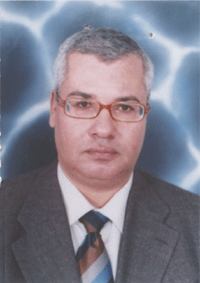

<div id="Magazine_Main">
<table class="Magazine_table" width="90%" border="0" cellspacing="1" cellpadding="1" id="Table1" height="159" dir="rtl">
    <tr>
        <td align="center" colspan="2">
          
                
         
        </td>

    </tr>
    <tr>
        <td align="center" width="62%">
              <p class="Magazine_p" align="right">
            <a class="Magazine_a_header" href="mkal/23/maher samy.htm">
                
                    <b><span style="text-decoration: none"> </span><span lang="ar-eg">افتتاحية المحكمة الدستورية العليا ..إلي أين </span>
                        <a /> </p>
                      
                 <a class="Magazine_a" href="mkal/23/maher samy.htm">
                <span style="text-decoration: none">
                    </span>بقلم المستشار/<span lang="ar-eg">ماهر سامي</span></b>
            </a>
            <br>
            <b> 
			<a class="Magazine_a" href="mkal/23/maher samy.htm">
                <span lang="ar-eg">نائب رئيس المحكمة الدستورية العليا</span></a></b></td>
        <td width="37%" align="right">
            </td>

    </tr>
    <tr>
        <td align="center" width="62%">
            <p class="Magazine_p" align="right">

                <b><a class="Magazine_a_header" href="mkal/23/amad elnajar.htm">
                    <span style="text-decoration: none"> <span lang="ar-eg">حقوق الإنسان و 
		المبادئ الدستورية بدأت من مصر القديمة</span></span></a></p>
                    
                    
                    <a class="Magazine_a" href="mkal/23/amad elnajar.htm">

                    بقلم المستشار 
		الدكتور /<span lang="ar-eg">عماد النجار</span>
                    <br>
                    <span style="text-decoration: none" lang="ar-eg">
                    </span><span lang="ar-eg">رئيس محكمة الأستناف السابق</span></a></b>
        </td>
        <td width="37%" align="right">
            <p align="center">
                
        </td>

    </tr>
    <tr>
        <td align="center" width="62%">

            <p class="Magazine_p" align="right">
            <a  class="Magazine_a_header" href="mkal/23/fathy.htm">
                <span style="text-decoration: none"> </span><b>عثرات الدستور الجديد في 
		دائرة التطبيق</b></a></p>
            <b>
                <a class="Magazine_a" href="mkal/23/fathy.htm">بقلم الدكتور / فتحى فكرى<br>
                    أستاذ القانون العام 
		كلية الحقوق - جامعة القاهرة</a></b>
        </td>
        <td width="37%" align="right">
            
    </tr>
    <tr>
        <td align="center" width="62%">
                <p class="Magazine_p" align="right">
            <b><a class="Magazine_a_header" href="mkal/23/rafat foda.htm">
                <span style="text-decoration: none"> </span><span lang="ar-eg">التشريعات الدستورية للسلطة القضائية ووضع أسس تحقيق العدالة وبناء دولة 
		القانون</span></a></p>
            
          <a class="Magazine_a" href="mkal/23/rafat foda.htm">
                بقلم <span lang="ar-eg">الدكتور رأفت فودة</span>
                <br>
                <span lang="ar-eg">رئيس قسم القانون العام كلية الحقوق- جامعة القاهرة</span></a></b></td>
        <td width="37%" align="right">
            
    </tr>
    <tr>
        <td align="center" width="62%">
                <p class="Magazine_p" align="right">
            <b><a class="Magazine_a_header" href="mkal/23/samy gmal.htm">
                <span style="text-decoration: none"> </span><span lang="ar-eg">الشريعة 
		الإسلامية ومبدي التزام سلطة التشريع باتباع مبادئها علي ضوء نصوص دستور 
		2012</span></a></p>
            
        
            <a class="Magazine_a" href="mkal/23/samy gmal.htm">
                بقلم<span lang="ar-eg"> الدكتور سامي جمال الدين </span>
                <br>
                <span lang="ar-eg">أستاذ القانون العام كلية الحقوق- جامعة الإسكندرية</span></a></b></td>
        <td width="37%" align="right">
            
    </tr>
    <tr>
        <td align="center" width="62%">
               <p class="Magazine_p" align="right">
            <b><a class="Magazine_a_header" href="mkal/23/mohmed el asar.htm"> <span lang="ar-eg">التعليق علي أحكام المحكمة الدستورية بين 
		الموضوعية العلمية و الهوي السياسي</span></a></p>
            
          
            <a class="Magazine_a" href="mkal/23/mohmed el asar.htm">
                بقلم<span lang="ar-eg"> 
		الدكتور يسري محمد العصار </span>
                <br>
                <span lang="ar-eg">أستاذ القانون العام كلية الحقوق- جامعة القاهرة</span></a></b></td>
        <td width="37%" align="right">
            
    </tr>
 
    <tr>
        <td align="center" width="62%">
             <p class="Magazine_p" align="right">
            <b><a class="Magazine_a_header" href="mkal/23/dr.abdalaziz.htm">
                <span style="text-decoration: none"> </span><span lang="ar-eg">الرقابة 
		السابقة في الدستور الجديد</span></a></p>
            <a class="Magazine_a" href="mkal/23/dr.abdalaziz.htm">
            
                 بقلم <span lang="ar-eg">المستشار 
		الدكتور/ عبد العزيز محمد سالمان </span>
                <br>
                <span lang="ar-eg">رئيس هيئة المفوضين بالمحكمة الدستورية العليا</span></a></b></td>
        <td width="37%" align="right">
            
    </tr>

    <tr class="Magazine_no_border">
        <td align="center" width="59%">
             <p class="Magazine_p" align="right">

            <b>
                <a class="Magazine_a_header" href="mkal/23/dr.t.shbl.htm">
                <span style="text-decoration: none"> </span><span lang="ar-eg">إطلالة 
		حول ممارسة المحكمة الدستورية العليا لاختصاصها </span></a>
                
             </br>   <a class="Magazine_a_header" href="mkal/23/dr.t.shbl.htm">
                <span style="text-decoration: none"> </span><span lang="ar-eg"> برقابة دستورية القوانين 
		واللوائح في ضوء الدستور الجديد</span></a>

                </p>
            
            <a class="Magazine_a" href="mkal/23/dr.t.shbl.htm">
                بقلم <span lang="ar-eg">المستشار 
		الدكتور/ طارق عبد الجواد شبل</span><br>
                <span lang="ar-eg">رئيس هيئة المفوضين بالمحكمة الدستورية العليا</span></a></b></td>
        <td width="30%" align="right">
            
    </tr>


</table>

   </div>